Wszystkie budynki Smoczej Cytadeli podczas rozbudowy — 47 rzeczywistych stanów
Każdy obraz zapisał klient VCMI z rzeczywistego okna miasta CCastleInterface. Seria pokazuje pojawianie się budynków i wszystkie przygotowane stopnie ulepszeń. To kontrolne zapisy wyglądu; nie jest to nagranie ręcznej rozbudowy ani potwierdzenie kolejności budowy zgodnej ze wszystkimi wymaganiami kampanii. Początek to najniższy budynek dochodu.
Kroki 45–47 pokazują osobno alternatywną rubinową gałąź siedliska poziomu 4. Nie oznaczają możliwości swobodnej zamiany gałęzi podczas zwykłej rozgrywki. Wszystkie 47 prób: zero ERROR i WARN.
← Poprzedni ▶ Pokaz slajdów Następny → Tempo 2 s 4 s 1 s
01. Rada Smoczej Osady 02. Smocza Karczma 03. Smoczy Fort 04. Smoczy Targ 05. Smocza Kuźnia 06. Magazyn Rtęci 07. Gildia Smoczej Magii - poziom 1 08. Twierdza Ostrostrzelców 09. Złota Odlewnia 10. Sala Tytanów 11. Grota Czarodziejskich Smoków 12. Rdzawe Leże 13. Szczyt Burzy 14. Błękitny Szczyt 15. Smoczy Targ Artefaktów 16. Wir Smoczej Many 17. Smoczy Skarbiec 18. Akademia Smoczych Mistrzów 19. Ratusz Smoczej Cytadeli 20. Gildia Smoczej Magii - poziom 2 21. Smocza Cytadela 22. Królewska Twierdza Ostrostrzelców 23. Diamentowa Odlewnia 24. Wieża Tytanów Burzy 25. Pradawna Grota Magii 26. Pradawne Rdzawe Leże 27. Oko Wiecznej Burzy 28. Sanktuarium Pradawnych Błękitnych Smoków 29. Wielki Ratusz 30. Gildia Smoczej Magii - poziom 3 31. Smocza Mennica 32. Smoczy Zamek 33. Gildia Smoczej Magii - poziom 4 34. Smoczy Kapitol 35. Królewska Smocza Mennica 36. Gildia Smoczej Magii - poziom 5 37. Bastion Egzekutorów 38. Rubinowa Odlewnia 39. Tron Serca Burzy 40. Rubinowa Grota 41. Ołtarz Korozji 42. Oko Nawałnicy 43. Tron Firmamentu 44. Serce Smoczej Cytadeli 45. Pradawna Rubinowa Grota 46. Pradawnej Rubinowej Grocie 47. Rubinowej Korony Otwórz oryginalny zrzut 800 × 600 Powiększenie zmienianego budynku
Powiększenie i opcjonalny obrys powstają w przeglądarce. Źródłowe zrzuty pozostają niezmienione. Pokaz slajdów jest prezentacją zdjęć, nie animacją budowy zarejestrowaną w grze.
Wszystkie 47 kadrów — wybierz dowolny 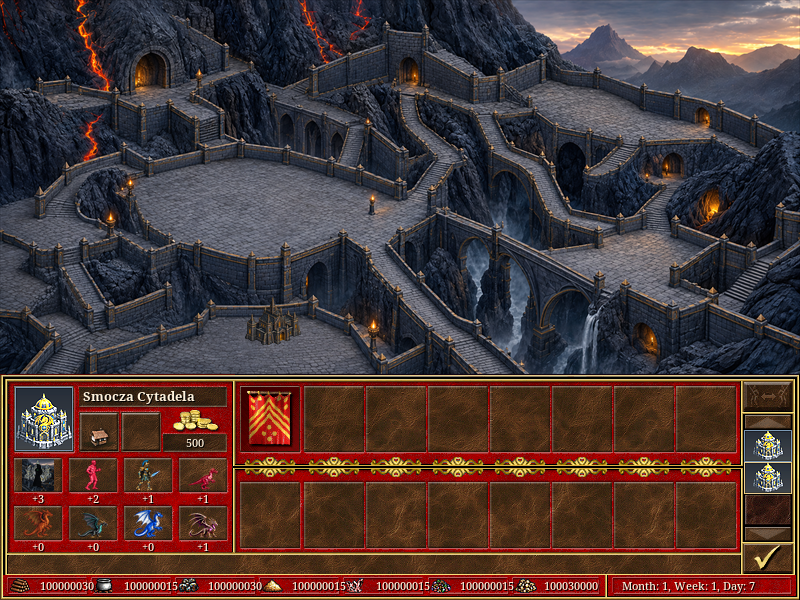
01. Rada Smoczej Osady 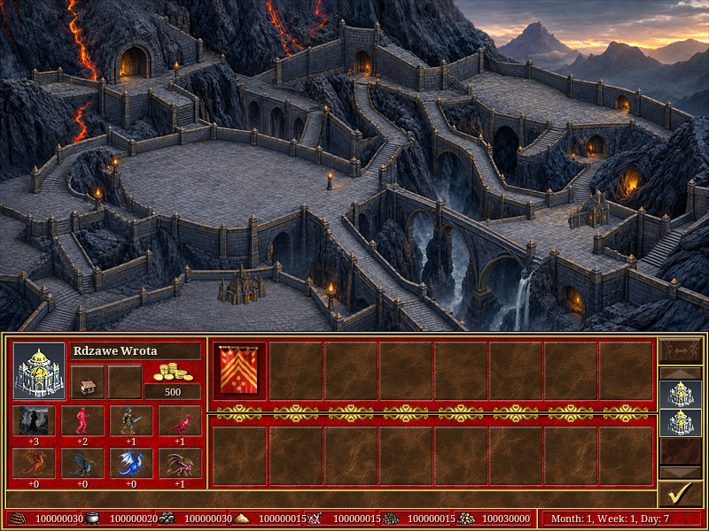
02. Smocza Karczma 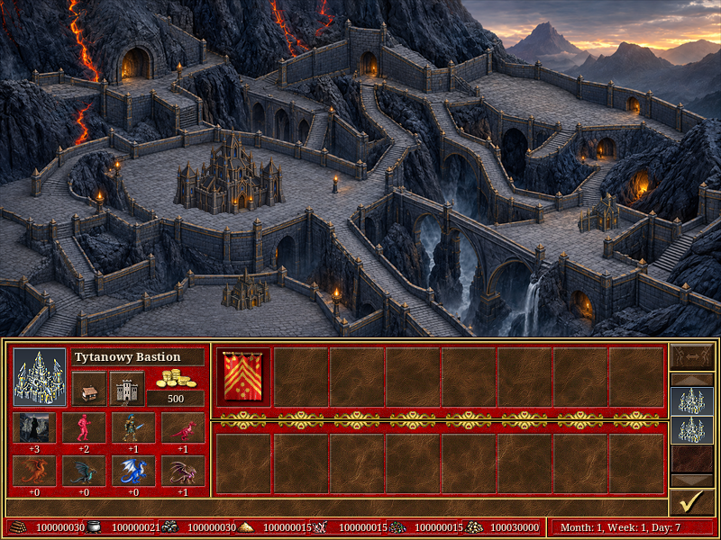
03. Smoczy Fort 04. Smoczy Targ 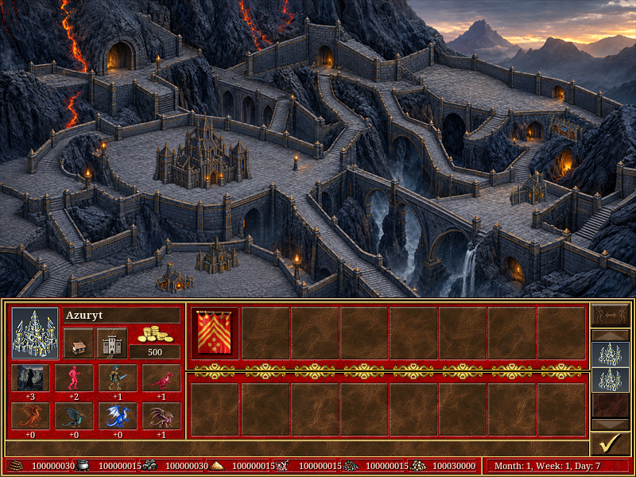
05. Smocza Kuźnia 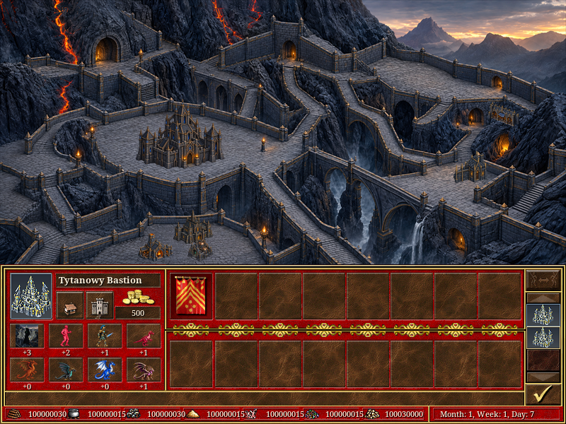
06. Magazyn Rtęci 07. Gildia Smoczej Magii - poziom 1 08. Twierdza Ostrostrzelców 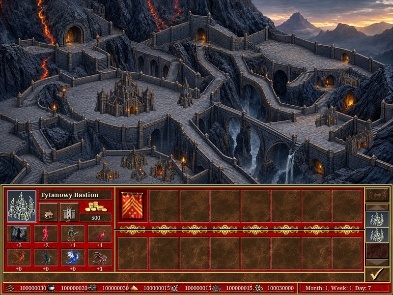
09. Złota Odlewnia 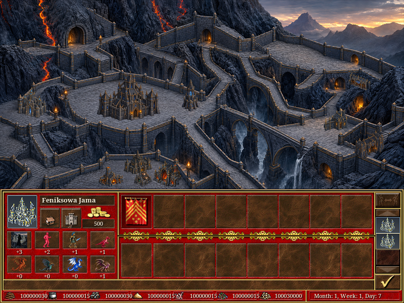
10. Sala Tytanów 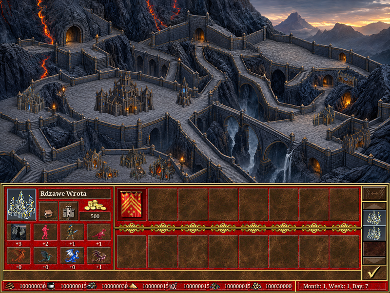
11. Grota Czarodziejskich Smoków 12. Rdzawe Leże 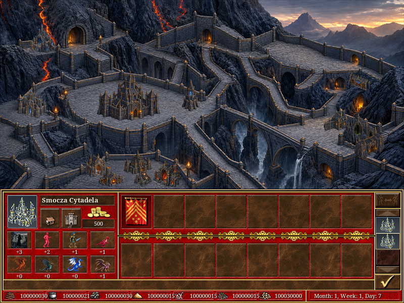
13. Szczyt Burzy 14. Błękitny Szczyt 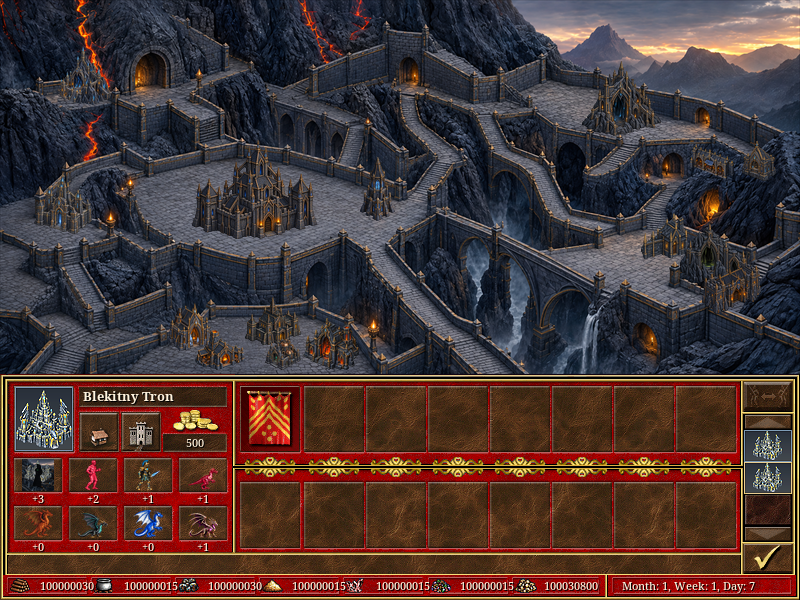
15. Smoczy Targ Artefaktów 16. Wir Smoczej Many 17. Smoczy Skarbiec 18. Akademia Smoczych Mistrzów 19. Ratusz Smoczej Cytadeli 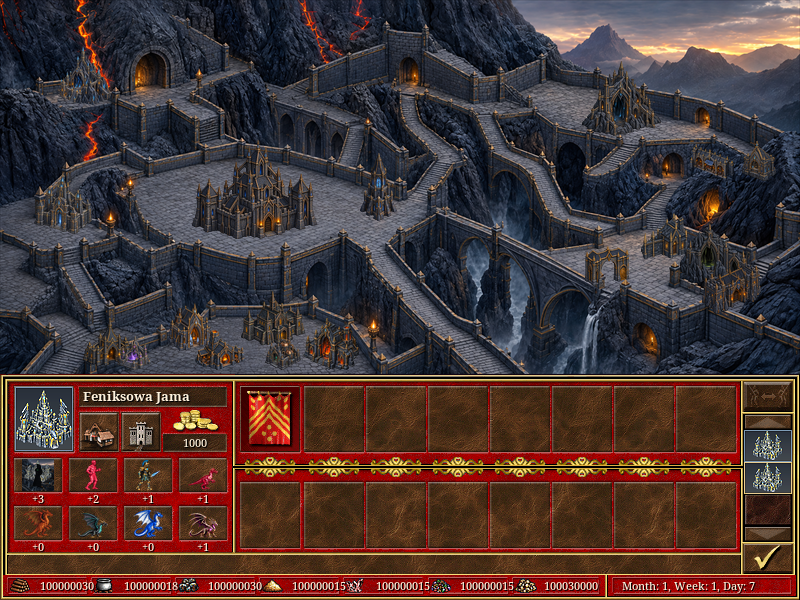
20. Gildia Smoczej Magii - poziom 2 21. Smocza Cytadela 22. Królewska Twierdza Ostrostrzelców 23. Diamentowa Odlewnia 24. Wieża Tytanów Burzy 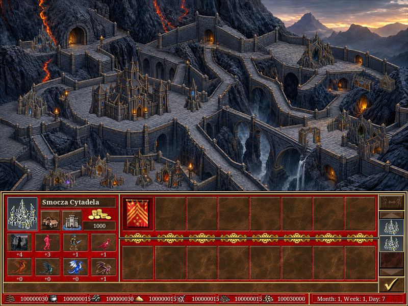
25. Pradawna Grota Magii 26. Pradawne Rdzawe Leże 27. Oko Wiecznej Burzy 28. Sanktuarium Pradawnych Błękitnych Smoków 29. Wielki Ratusz 30. Gildia Smoczej Magii - poziom 3 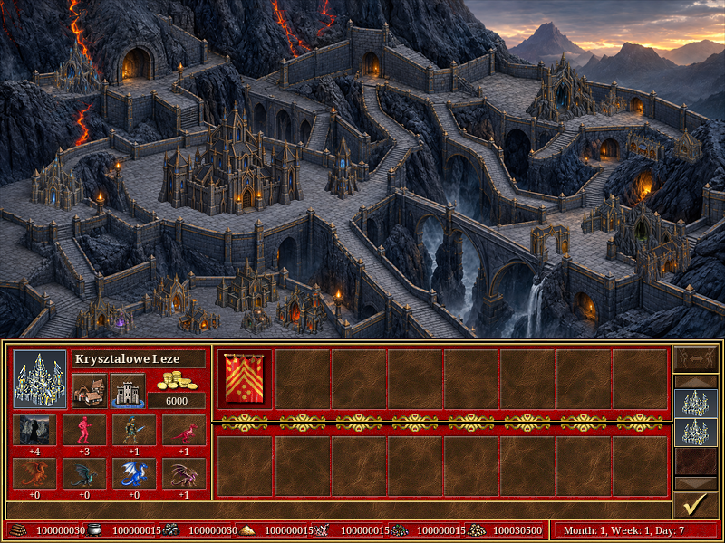
31. Smocza Mennica 32. Smoczy Zamek 33. Gildia Smoczej Magii - poziom 4 34. Smoczy Kapitol 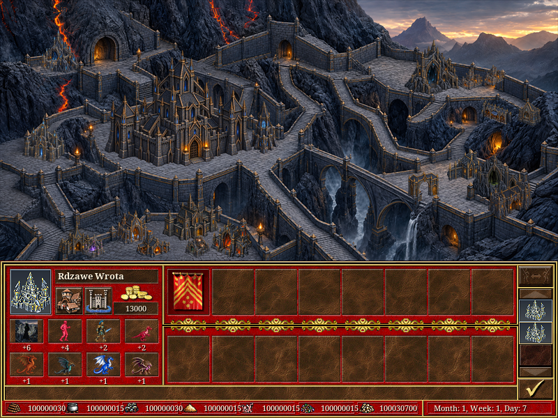
35. Królewska Smocza Mennica 36. Gildia Smoczej Magii - poziom 5 37. Bastion Egzekutorów 38. Rubinowa Odlewnia 39. Tron Serca Burzy 40. Rubinowa Grota 41. Ołtarz Korozji 42. Oko Nawałnicy 43. Tron Firmamentu 44. Serce Smoczej Cytadeli 45. Pradawna Rubinowa Grota 46. Pradawnej Rubinowej Grocie 47. Rubinowej Korony Raport, identyfikatory budynków i źródła obrazów · Raport korekty rozmieszczenia · Osobne porównanie zabudowy miejskiej